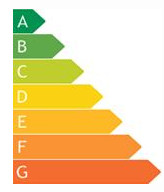

Что такое классы энергопотребления
 Общепринятая линейка классов энергопотребления.
Общепринятая линейка классов энергопотребления.
Класс энергопотребления волновал людей в славную эпоху СССР меньше всего. Не так велик был выбор телевизоров и стиральных машин с холодильниками, чтобы кочевряжиться и делать выбор домашней техники по этому признаку. Да и обходилось электричество в те годы в сущие копейки. Кого интересовал класс энергопотребления холодильников?
Не так было в Европе, ушлые европейцы уже в 1992 году стали указывать на товаре энергетическую эффективность. Т.е. попросту лепить на бытовую технику цветовую гамму и буквенное обозначение класса энергопотребления. Он указан буквенными символами от А до G на определенном цветовом фоне (от зеленого – класс высокой эффективности, до красного – класс низкой эффективности).

Товары с такими наклейками давно привычны на полках наших магазинов, но лишь с января 2011 года и отечественный производитель был обязан проставлять на своей технике подобную маркировку. И это радует, ибо плата за электроэнергию подскочила на порядки, а зарплата увеличивается лишь в каких-то полумифических отчетах правительства.
Разберем подробнее маркировку классов энергопотребления. Букве А соответствует самый высокий показатель эффективности. Далее по нисходящей следуют буквы В, С, D, F и G (самая прожорливая техника). Следует добавить, есть и дополнительные обозначения: А+ (эта техника экономней класса А на четверть) и А++ (дает выигрыш на 50%). Это и стоит принимать во внимание, подбирая класс энергопотребления холодильников.
Класс энергопотребления – величина не универсальная. Так, для стиральных машин она определяется соотношением потребляемой мощности (кВт/ч) к загрузке машины (максимальной). Для холодильников эта величина (класс энергопотребления) есть отношение потребления электроэнергии (фактического) к стандартному потреблению (класс А – 55%, G – свыше 125%).
Но нас, конечно, интересуют телевизоры. Увы, заявленные производителями уровни энергопотребления зачастую весьма спорны, такое впечатление, что брали их с потолка. Тем не менее, следует знать: потреблять энергии больше, чем заявлено в спецификации, ваш телевизор никогда не будет, ибо это чревато нарушением электрической безопасности, и производитель на сей шаг никогда не пойдет. Конкретные же цифры оценивать сложно: плазма потребляет энергию только в случае вывода картинки, у ЖК постоянно горят лампы подсветки… Кстати, хваленый режим ожидания также забирает себе часть электроэнергии. Не все так просто. Радуют, правда, датчики освещения (внешнего), которые в последнее время ставятся на современные модели, они снижают энергопотребление, самостоятельно регулируя яркость. И динамическая контрастность здесь не лишняя.
Последние серии телевизоров, кажется, бьют все рекорды. Например, компания Philips выпустила светодиодный TV ECO Smart (серия 46PFL6806) с потрясающими показателями: класс энергопотребления – А++.